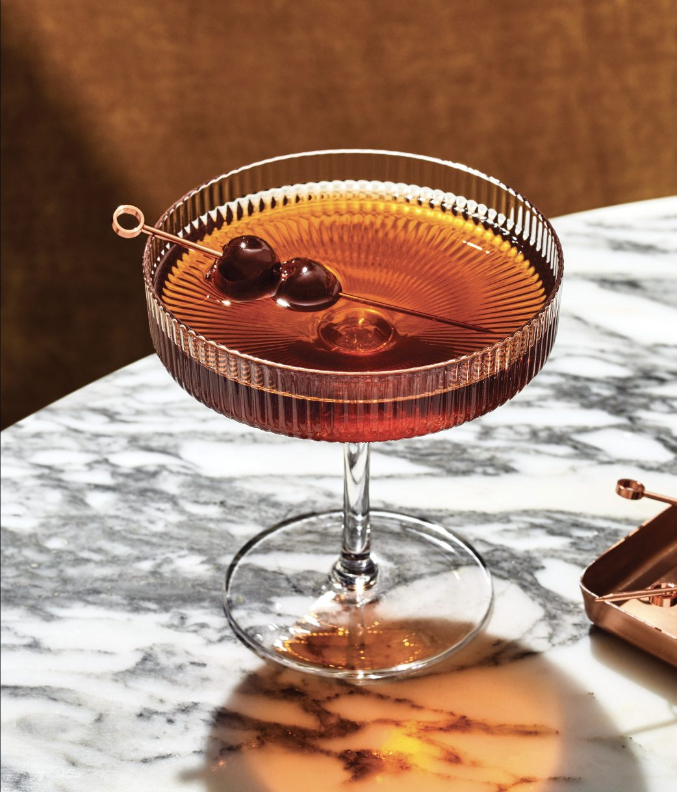

What starts at the bar no longer stays there. Today, that knowledge travels home, re-created, refined, and reinterpreted with confidence. The home bar has evolved and is inspired by what consumers experience while they’re out. More than ever, people are building, experimenting, and participating in the craft in their own way. When it comes to mixing great drinks, the line between professional and personal has blurred, and you are the beneficiary.
They’ve had it out. Now they want to make it their own.
